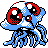

#193
Tentacruel
WaterPoison
Clear Body
Rain DishGradually regains HP in rain.
MercilessHidden abilityAlways crits poisoned foes.
Base stats Total 515
HP80
Attack70
Defense65
Speed100
Sp. Atk80
Sp. Def120
Evolution
Evolves from Tentacool — Level 30
Training & breeding
- Catch rate
- 60 / 255
- Base experience
- 180
- Wild held items
- None
- Gender ratio
- 50% male, 50% female
- Egg groups
- Water 3
- Hatch time
- 20 egg cycles (~5,120 steps)
- Growth rate
- Slow
Level-up moves
LevelMoveTypeCat.PowerAcc.
TM / HM moves 20
TM / HMMoveTypeCat.PowerAcc.